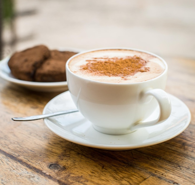
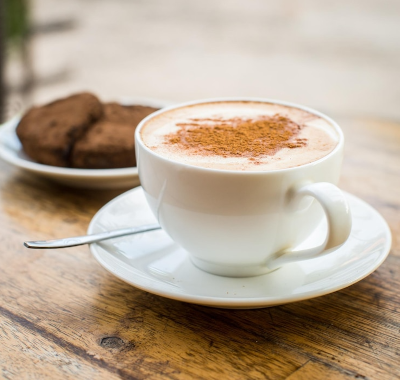
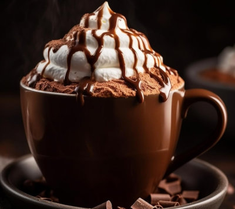
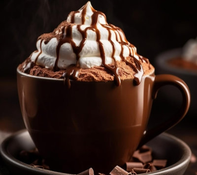
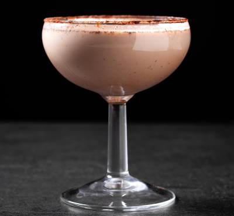
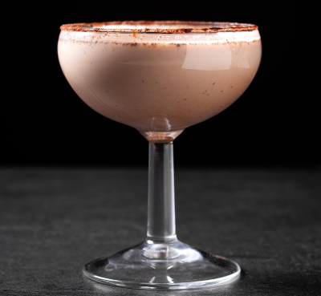
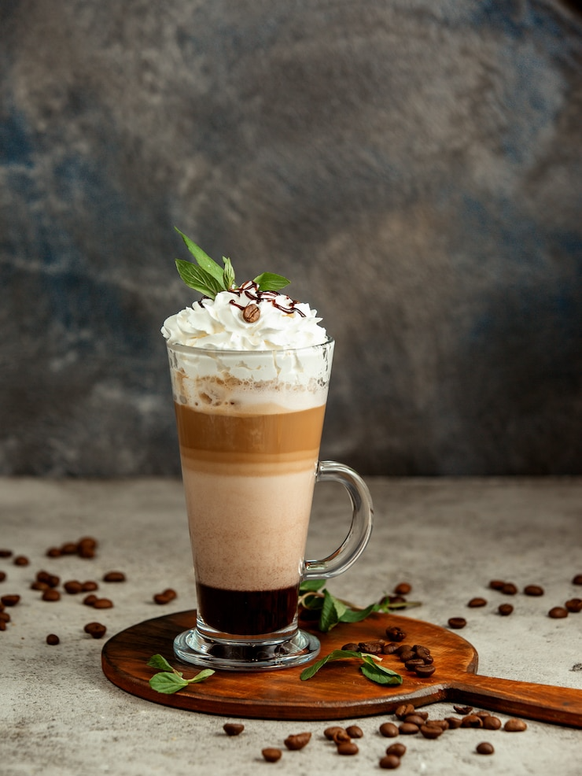
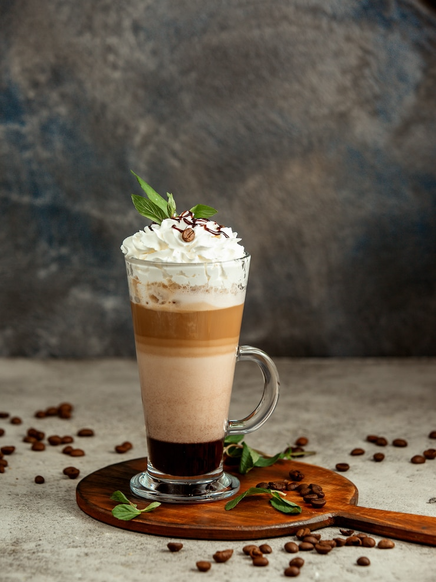
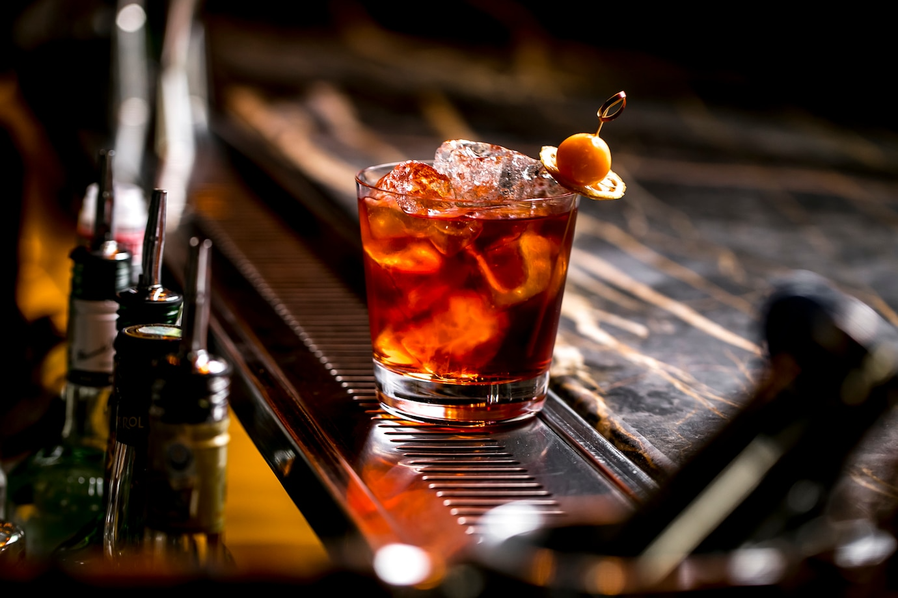
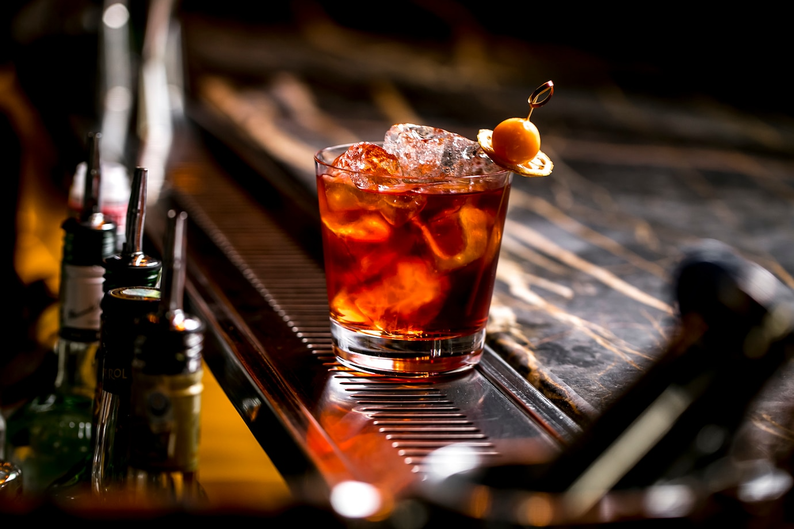

Coffee all day
Bem-vindo ao Coffee All Day, o seu refúgio acolhedor para os amantes de café! Aqui, cada xícara é uma experiência única, onde o aroma rico e os sabores intensos se combinam para criar momentos inesquecíveis. Nossa paixão pelo café vai além de apenas servir uma bebida. Nós nos dedicamos a oferecer uma experiência completa, desde a cuidadosa seleção dos grãos até a preparação artesanal de cada xícara. Cada detalhe é pensado para proporcionar um momento de prazer e relaxamento em meio à agitação do dia a dia.


O café espresso é uma bebida forte e concentrada feita com uma pequena quantidade de café moído finamente e água quente sob pressão. Essa técnica extrai rapidamente os sabores do café, resultando em uma bebida encorpada e saborosa, conhecida por sua intensidade e crema. O café espresso é apreciado por sua intensidade e sabor concentrado.
|Café Espresso


O Flat White é uma bebida única que combina a intensidade do espresso com a suavidade do leite vaporizado, resultando em uma experiência de sabor excepcionalmente equilibrada. No Coffee All Day, preparamos o Flat White com maestria, usando café espresso de alta qualidade e leite fresco vaporizado para criar uma textura aveludada e um sabor suave e encorpado.
|Flat White
 

No Coffee All Day, o cappuccino é uma experiência irresistível! Preparamos cada xícara com um espresso rico e cremoso, combinado com leite vaporizado e uma camada de espuma de leite macia e densa. A mistura equilibrada desses ingredientes resulta em um sabor suave e encorpado, com a cremosidade perfeita para satisfazer sua vontade de café. Servido em uma xícara aquecida, nosso cappuccino é a escolha ideal para desfrutar a qualquer hora do dia.
|Cappucino
 

Temos uma sobremesa deliciosa chamada Affogato . É feita com uma bola de sorvete de baunilha coberta com um shot duplo de espresso quente. A mistura do café quente com o sorvete gelado cria uma combinação incrível de sabores e texturas. É uma sobremesa simples, mas deliciosa, perfeita para os amantes de café e sorvete. Experimente o Affogato no Coffee AllDay e surpreenda seu paladar!
|Affogato
 

Também temos o clássico coquetel Alexander. Feito com conhaque, licor de cacau e creme de leite, é uma bebida sofisticada e deliciosa. A combinação do conhaque com o licor de cacau resulta em um sabor rico e encorpado, enquanto o creme de leite adiciona uma textura suave e cremosa. É uma ótima opção para quem busca uma bebida elegante e saborosa.
|Alexander


Oferecemos uma opção deliciosa e exótica: O Coconut Coffee. Esta bebida combina a intensidade do nosso café espresso com o sabor suave e tropical do coco. O café espresso é cuidadosamente preparado e misturado com leite de coco, criando uma combinação harmoniosa de sabores. O Coconut Coffee é uma escolha refrescante e revigorante, perfeita para quem busca uma experiência de café única e cheia de sabor.
|Coconut Coffe


Você pode desfrutar de uma bebida refrescante e suave: O Cold Brew. Feito com grãos de café moídos grossos e água fria, o Cold Brew é preparado lentamente durante várias horas para extrair um sabor suave e menos ácido. O resultado é uma bebida gelada, perfeita para os dias quentes. O Cold Brew do Coffee All Day é encorpado e cheio de sabor, com notas sutis de chocolate e nozes .
|Cold Brew


Temos uma opção sofisticada para os amantes de café e coquetéis: O Espresso Martini. Feito com uma combinação de café espresso, vodka, licor de café e açúcar, é uma bebida complexa e deliciosa. O café espresso adiciona uma profundidade de sabor única, enquanto a vodka e o licor de café trazem um toque de sofisticação e doçura. Agitado com gelo e servido em uma taça de martini , o Espresso Martini é uma escolha elegante e estimulante para qualquer ocasião.
|Expresso Martini


Oferecemos uma bebida clássica e reconfortante: O Latte Macchiato. Esta bebida é feita com uma base de leite vaporizado e uma pequena quantidade de café espresso "macchiato" ou "manchado" por cima, criando camadas distintas. O Latte Macchiato é conhecido por sua apresentação visualmente impressionante, com as camadas de leite e café criando um efeito visualmente atraente.
|Latte Macchiato
 

Temos uma opção deliciosa e reconfortante: O Mochaccino. Esta bebida combina a intensidade do café espresso com a suavidade do leite vaporizado e o sabor do chocolate. O Mochaccino é uma escolha indulgente e satisfatória, perfeita para quem gosta de um toque de doçura em seu café.
|Mochaccino


Oferecemos uma opção clássica e sofisticada: O White Russian. Este coquetel é feito com vodka, licor de café e creme de leite, resultando em uma bebida suave e indulgente. O White Russian é conhecido por sua combinação equilibrada de sabores, com a vodka dando um toque de robustez, o licor de café adicionando um sabor rico e o creme de leite conferindo uma textura cremosa.
|White Russian
 

Temos um coquetel clássico e cheio de sabor: O Negroni. Feito com gin, vermute tinto e Campari, o Negroni é uma bebida complexa e equilibrada, conhecida por sua cor vermelha vibrante e sabor amargo característico. É uma escolha sofisticada para quem aprecia coquetéis com personalidade.
|Negroni


No Coffee All Day, Temos uma opção refrescante e deliciosa: O Frappé de Café. Esta bebida gelada é feita com café espresso, gelo, leite e açúcar, resultando em uma mistura cremosa e refrescante. O Frappé de Café é uma escolha popular para os dias quentes, pois combina a energia do café com a sensação refrescante do gelo.